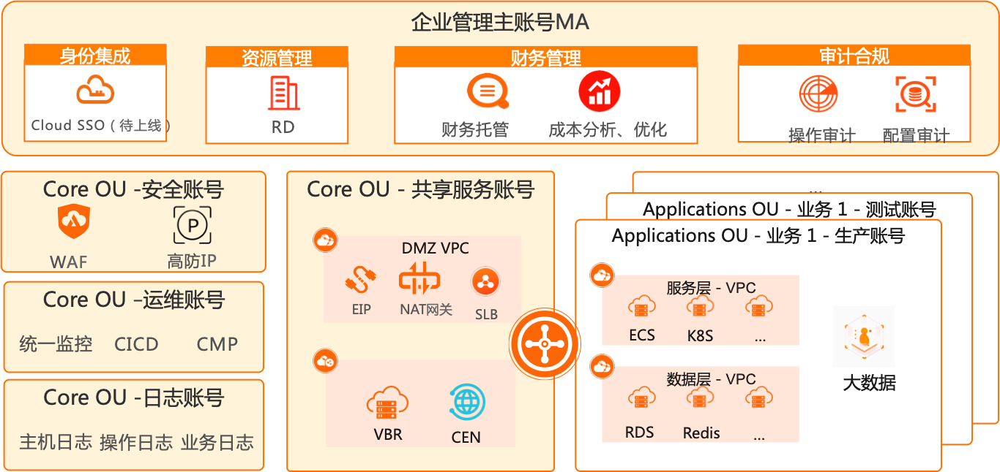

该方案有何用途？
- 企业级统一账号架构设计是一种解决方案，可帮助客户根据阿里云最佳实践更快的设计企业的多账号环境。由于涉及到多个基础云产品，设置多账号可能需要大量时间，涉及到多个账号及服务的配置，并需要深入了解相关的服务。
- 此解决方案可通过自动创建核心账号及资源实施初始化安全基准，来帮助节省时间。它还提供了一个在多账号环境中的财务管理模型，能够帮助客户快速判断使用哪种财务结算手段来管理云上费用问题。
阿里云解决方案实施概述
- 统一账号架构解决方案会使用阿里云治理中心产品，以预置部分核心账号和自动配置新账号。
- 多账号结构图： 
- 阿里云多账号
- 阿里云账号有多层含义，首先，每个云账号都是完全隔离的租户，默认在资源访问、网络部署和身份权限都是完全独立和隔离的，这样就可以将有强隔离诉求的业务以云账号独立部署；其次，云账号都关联账单，也就可以将不同业务部署在不同的云账号，实现成本的独立核算和出账。使用多账号有如下几个优势：
- • 业务强隔离
- • 匹配不同业务的外审合规
- • 独立结算
- • 突破单账号Quota限制
- 此解决方案中涉及到的几个账号说明：
- 企业管理主账号MA
- 企业管理主账号包括资源目录（RD），用于管理多账号。可以使用这个账号作为财务托管账号，统一由这个账号来对其他账号进行统一支付结算，统一查看云账单。统一由这个账号配置配置审计的规则并下发到各个成员账号
- 安全账号
- 一般是企业里面负责安全角色会使用这个账号进行配置相关安全产品。比如常见的web应用防火墙（WAF）、高防IP等。
- 日志账号
- 日志账号，聚合所有成员账号的日志。包括云产品的操作行为日志，审计日志以及业务所产生的日志。
- 运维账号
- 部署运维相关的工具，比如统一监控平台、CMP（云管）、CMDB之类的。一般是给企业运维角色使用
- 共享服务账号
- 共享服务账号，企业共享服务将部署在这个账号内，例如：网络的配置、统一出入公网的配置等。
- 业务账号
- 为每个业务线创建的账号，遵循企业统一的管控规定。一般一个业务账号可以分生产环境、测试环境。